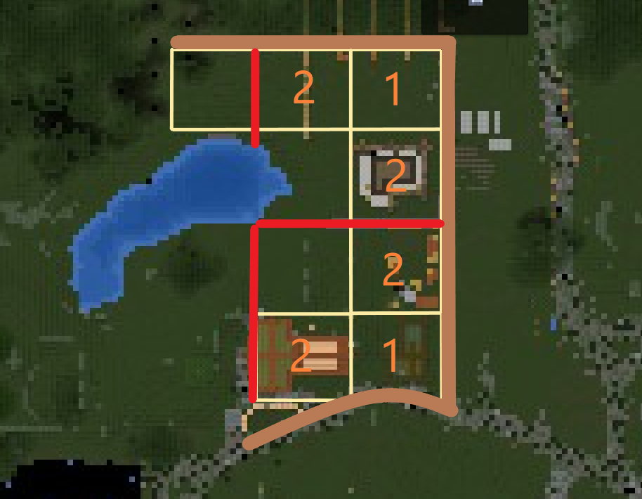

Красная цена является показателем, что город временно не закупает данную позицию.
В категории "Слитки" уточняйте возможность пополнить наличие.
За активное участие в жизни города жители могут быть награждены и получить титулы:
Эсквайр (1-2 дня в городе) - 1 чанк за городом
Барон (1 недели в городе) - 1 чанк в городе, 1 за городом
Виконт (2 недели) - 1/2
Граф (заслуги) - 2/4
Маркиз (заслуги) - 2/8
Герцог (заслуги) - 2/12
При посвящении в титул Эсквайра город предоставляет комплект медной брони
Обращение к титулованным особам:
Эсквайр, Барон - "Сэр" или
"Леди" (возможно добавление имени/ника)
Виконт, Граф, Маркиз - "Лорд", более почтительная форма - "Милорд", "Милсдарь"
Герцог - "Милорд", "Милсдарь" или "Ваша милость"
Монарх - "Милорд", "Мой лорд", "Милсдарь" или "Ваше величество"
В начале вашего пути в Новиграде вам будет выделен участок по вашему выбору на 10 дней, который
по
истечении данного срока вы должны будете выкупить в своё владение. За это время горожанин должен
поиграть хотя бы пару реальных часов, показать свою адекватность.
Далее есть два пути:
Заслужить титул, который позволит купить земли (минимум Эсквайр для участка за стеной города,
минимум Барон для участка в пределах города), *подробнее о
титулах в "титулы города"
Купить землю, внеся залог, часть которого вернётся по достижении нужного титула
Кол-во доступных к приобретению чанков в зависимости от титула:
Эсквайр - 1 чанк за городом
Барон - 1 чанк в городе, 1 за городом
Виконт - 1/2
Граф - 2/4
Маркиз - 2/8
Герцог - 2/12
Обо всех покупках вы должны оповестить монарха (для добавления описания
чанка и/или уменьшения цены
согласно титулу, см. ниже)
Пример: вы захотели купить участок в центре города и видите цену в 15000, это цена с
залогом,
начальная
же цена в 3 раза меньше - 5000, она доступна людям с нужным титулом (обратитесь к монарху, чтобы цена
была снижена), если же у вас нет титула, но вы хотите скорее купить землю, то вам придётся заплатить
15000, однако часть (половина, 7500), вернётся к вам по достижении нужного титула.
6000 (начальная цена) + 3000 (наценка за отсутствие титула) + 9000 (залог до титула) = 18000
4000 (начальная цена) + 2000 (наценка за отсутствие титула) + 6000 (залог до титула) = 12000 Дом обязан быть построен через неделю после покупки участка! В противном случае, если не будет
предоставлено уважительных причин, будут приняты меры вплоть до изъятия территории и/или лишения титулов
Помните, что через месяц отсутствия без предупреждения ваша земля будет возвращена городу и может
быть
продана другому владельцу со всем имуществом.
Жилищный кодекс:
Игрок не имеет права соприкасаться блоками постройки с границей чанка, таким образом для
постройки здания/зданий у вас имеется площадь 14x14 (исключением выступает граница чанков между
двумя вашими чанками, тогда площадь становится 14x15 для обоих участков)
Через каждые два чанка застройки должен проходить переулок, исходя из этого игрок должен
выделить полосу шириной в 1 блок (приветствуется красивое оформление растительностью, небольшими
заборами и тд), см. рис. 1, уточнять у монарха или ассистентов.

Рис. 1 (коричневый - основные дороги-улицы, красный - переулки, лимонный - границы
чанков, оранжевый - счёт чанков до переулка)
Здание должно быть пропорциональным и соответствовать общей стилистике города
Максимальные габариты первого этажа, указаны по основной стене: 7 (ширина в торце) на 11 (длина)
на 5 (высота потолка, включая перекрытие)
Максимальные габариты второго этажа: 9 (ширина в торце) на 13 (длина) на 7 (высота потолка, НЕ
включая перекрытие)
Возможны расширения габаритов описанных выше в случае, если вы используете нестандартную форму
дома (напр. Т-образную, L-образную и др.)
Максимальная высота дома - 15 блоков (не включая фундамент)
Высота фундамента - 1-2 блока (исключением может выступать фундамент, созданный на скалистой
местности, обсуждать с монархом или ассистентами)
Запрещено содержать животных в городских чанках, исключением является Лошадь, если для неё
отведён загон или конюшня
Игрок может построить подвал под своим участком: расстояние от пола первого этажа до пола подвала не должно превышать 10 блоковстена подвала не должна касаться границы чанка, таким образом максимальный размер 14*14
В городе действует ряд служб, помогающих его развитию, ниже будет представлен их список с
Никами
игроков, входящих в ряды той или иной службы, подробную информацию вы можете найти в закреплённых
сообщениях в чатах категории "услуги города":